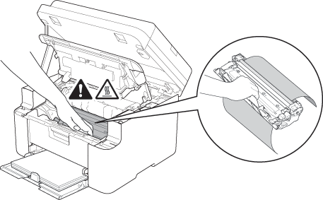
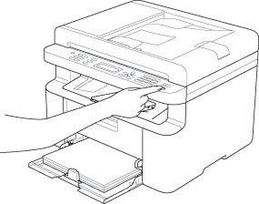

- 1
-
Odprite pokrove.

- 2
-
Iz naprave vzemite sklop enote bobna in odstranite zataknjen papir.
- OPOZORILO
- VROČA POVRŠINA
- 3
-
Sklop enote bobna znova vstavite v napravo in zaprite pokrove.

- 4
-
Pritisnite gumb Start, da počistite napako.